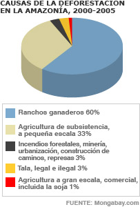
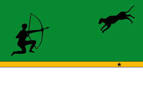

El Amazonas es un departamento ubicado en el sur de Colombia, conocido por su vasta selva tropical y su biodiversidad única. Es la región más grande del país y forma parte de la cuenca del río Amazonas. La capital del departamento es Leticia, una ciudad fronteriza con Brasil y Perú. El Amazonas es hogar de numerosas comunidades indígenas que han vivido en armonía con la naturaleza durante siglos. La región es famosa por su exuberante flora y fauna, incluyendo especies como el delfín rosado, jaguares, anacondas y una gran variedad de aves. Además, el Amazonas es un destino popular para el ecoturismo, ofreciendo actividades como la observación de aves, paseos en bote por el río Amazonas y exploración de la selva. La región también enfrenta desafíos ambientales, como la deforestación y la minería ilegal, que amenazan su ecosistema único.
Algunos de los sitios turísticos más destacados en el Amazonas incluyen:
La gastronomía del Amazonas es diversa y refleja la riqueza cultural y natural de la región. Algunos de los platos más representativos incluyen:
El Amazonas es el departamento más grande de Colombia, con una extensión de aproximadamente 109,665 kilómetros cuadrados. A pesar de su gran tamaño, es uno de los departamentos menos poblados del país, con una población estimada de alrededor de 76,000 habitantes. La mayoría de la población vive en la capital, Leticia, y en pequeñas comunidades indígenas dispersas por la región. La economía del Amazonas se basa principalmente en actividades como el ecoturismo, la pesca y la agricultura de subsistencia. La región también enfrenta desafíos significativos, como la deforestación y la minería ilegal, que amenazan su biodiversidad única.
 